Lektion 01
Einführung.
Ein Haltebogen verbindet zwei Noten gleicher Tonhöhe. Er kann Noten innerhalb eines Takts oder über einen Taktstrich hinweg verbinden. Ihre Dauern werden zusammengezählt; die zweite Note wird nicht erneut angeschlagen. Der Ton klingt ohne neuen Einsatz weiter.
Das lernst du.
Du erkennst Haltebögen, addierst die verbundenen Notenwerte und hältst den Ton ohne neuen Einsatz weiter.
Beim Klatschen: Lass deine Hände nach dem Klatschen zusammen, bis die Note vorbei ist. Beim Singen oder Spielen eines Instruments kannst du den Ton einfach weiterhalten. Beim Klatschen ist es wichtig, die Hände bis zum Ende der Note zusammenzulassen.
Ein Beispiel im 4/4-Takt.
Auf Schlag 1 beginnt eine Viertelnote. Sie wird mit einem Bindebogen an die gleich hohe Achtelnote auf Schlag 2 gebunden. Das nächste Achtel erklingt auf „2-und“. Auf Schlag 3 beginnt eine halbe Note, die bis zum Taktende klingt.
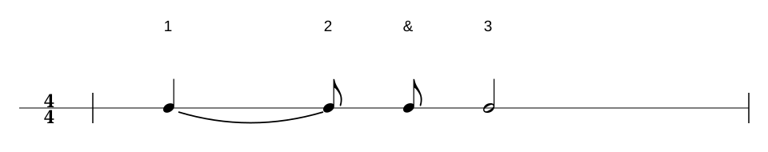
Hörbeispiel
Ein Beispiel über zwei Takte.
Beide Takte füllen genau vier Schläge. Im ersten Takt stehen eine Viertelnote, zwei Achtel, vier Sechzehntel und die gebundene Viertelnote auf Schlag 4. Diese klingt über den Taktstrich hinweg bis Schlag 1 des zweiten Takts weiter. Danach folgen eine Achteltriole auf Schlag 2 und eine halbe Note auf den Schlägen 3 und 4.
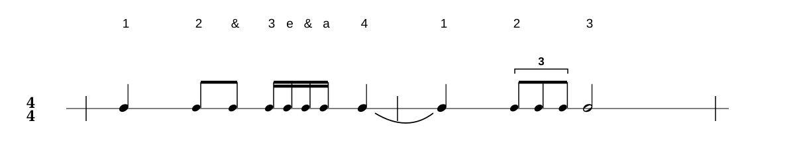
Hörbeispiel
Lektion 02
Lesen
Lies jeden Takt gleichmäßig im 4/4-Puls. Bei einem Haltebogen klingt die erste Note ohne neuen Anschlag weiter. Zähle trotzdem alle vier Schläge mit.
Leseübung 1 · Haltebogen im Takt
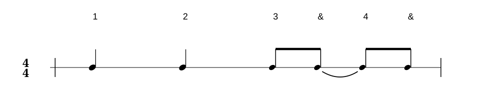
Hörbeispiel · Leseübung 1
Leseübung 2 · Über den Taktstrich
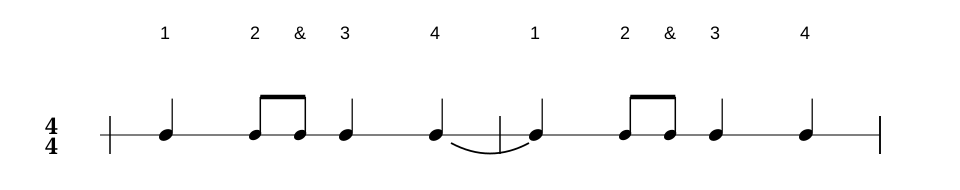
Hörbeispiel · Leseübung 2
Leseübung 3 · Gemischte Notenwerte
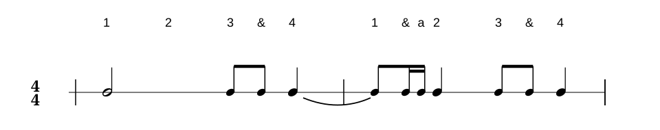
Hörbeispiel · Leseübung 3
Lektion 03
Hören
Höre den Rhythmus und notiere ihn. Achte darauf, wann ein Ton ohne neuen Anschlag weiterklingt. Öffne die Lösung erst danach.
Höraufgabe 1
Höraufgabe 1
Lösung zu Höraufgabe 1 anzeigen
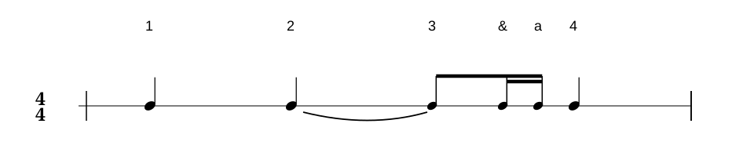
Höraufgabe 2
Höraufgabe 2
Lösung zu Höraufgabe 2 anzeigen
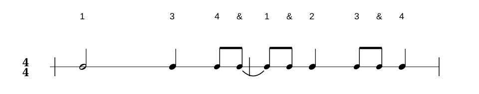
Höraufgabe 3
Höraufgabe 3
Lösung zu Höraufgabe 3 anzeigen
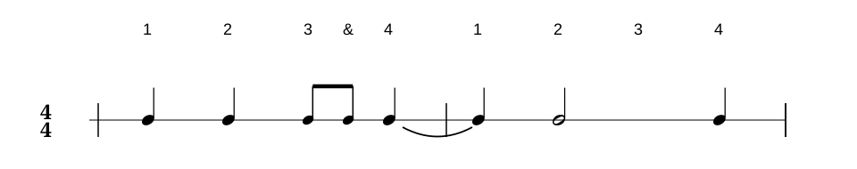
Lektion 04
Fehler finden
Vergleiche die Aufnahme mit der Notation. Achte darauf, wie lange die Töne klingen und ob sie ohne neuen Anschlag weitergeführt werden.
Fehler finden 1
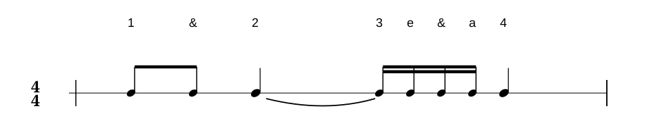
Fehlerhafte Aufnahme · Aufgabe 1
Lösungshilfe
Zähle die Sechzehntelpositionen auf Schlag 3 weiter und achte darauf, ob dort ein neuer Anschlag kommt.
Fehler finden 2
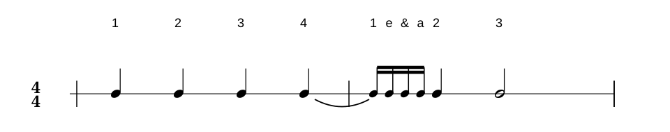
Fehlerhafte Aufnahme · Aufgabe 2
Lösungshilfe
Höre genau hin, ob der Ton auf Schlag 1 des zweiten Takts neu beginnt oder aus dem vorherigen Takt weiterklingt.
Fehler finden 3
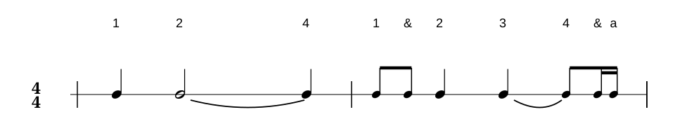
Fehlerhafte Aufnahme · Aufgabe 3
Lösungshilfe
Vergleiche, wie lange die beiden gebundenen Töne gehalten werden und ob die Einsätze auf Schlag 4 korrekt weiterlaufen.
Lektion 05
Haltebögen selber setzen
Übung 1 · Zwei eigene Takte
Setze aus den bekannten Notenwerten und Pausen zwei eigene Rhythmen zusammen. Füge Zeichen an beliebigen Einfügestellen hinzu oder entferne sie wieder. Jeder Takt darf höchstens vier Schläge umfassen. Anschließend kannst du Haltebögen zwischen benachbarte Noten setzen, auch über den Taktstrich hinweg.